Official videos, GTA VI
The official GTA 6 videos, moment by moment
The four videos released by Rockstar, to watch here, with what you see in them: the moments we noted, the music, the vehicles, the weapons and the places.
The YouTube player only loads when you click. Legal and privacy.


On the big screen
The screening room
The latest video is now showing; pick another one from the list.

Official YouTube (Google) player, loaded only after your click: YouTube may then set its own cookies. Legal and privacy
Now showing
Launch trailer
Released by Rockstar on October 15, 2026, set to a new single by Justice, the duo behind the game’s original score.
- 1 song
- Official
Rockstar releases it on October 15, 2026 with the story summary: Jason and Lucia, caught up in a criminal conspiracy that stretches across the entire State of Leonida.
- Official
It plays over “Flower in a Hurricane”, Justice’s new single with Tame Impala, SZA and King Gizzard & The Lizard Wizard, also featured on GTA VI: The Album.
- Official
Justice is composing the game’s original score; Rockstar says more details will follow, including an album of the score.
Now showing
An Extended Look
A presentation of about 26 minutes, aired on August 27, 2026, first on Netflix and then on YouTube, captured on PlayStation 5.
- 4 images noted
- 14 songs
- 47 vehicles
- Official
Rockstar announces it as a presentation of about 26 minutes, first on Netflix and then on YouTube.
- Official
It covers the gym, basketball, the shooting range, races, car theft, robberies, the police and Jason and Lucia’s daily life.
- Seen in media
The press has listed fourteen licensed songs in it, with their timestamps; Rockstar hasn’t published the list.
Now showing
Trailer 2
Released on May 6, 2025 along with the character and region pages: Jason and Lucia’s story, from the Leonida Keys to Vice City, over “Hot Together” by the Pointer Sisters.
- 7 timestamped moments
- 4 songs
- 43 vehicles
- Official
The official summary: an easy score goes wrong, and the duo ends up on the dark side of the sunniest place in America.
- Official
On the same day, Rockstar releases pages for eight characters, the six regions of Leonida and dozens of screenshots.
- Official
Main song credited by Rockstar: “Hot Together” by the Pointer Sisters (1986); short car radio snippets also play, noted by the press.
Now showing
Trailer 1
The first GTA VI video, released on December 4, 2023: Lucia, the State of Leonida and Vice City, over “Love Is a Long Road” by Tom Petty.
- 9 timestamped moments
- 1 song
- 104 vehicles
- Seen in media
The video opens on Lucia, questioned in an orange jumpsuit at the Leonida Penitentiary.
- Seen in media
Jason appears at her side: a motel room, a car getaway, a convenience store robbery.
- Official
A single song from start to finish, credited by Rockstar in the video’s description: “Love Is a Long Road” by Tom Petty (1989).


Side by side
The videos by the numbers
What the site has noted in each video, based on its pages.
Frame by frame
Moments to rewatch
The official images taken from the videos, in order; each one leads to its video.
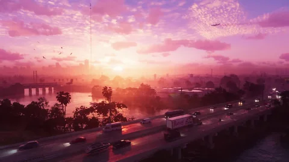
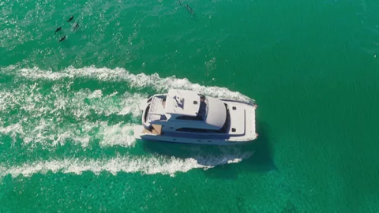

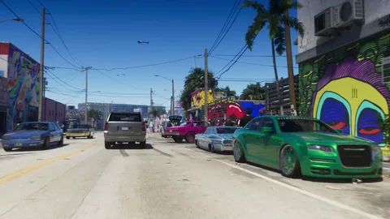

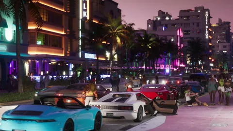
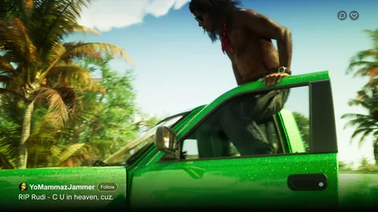

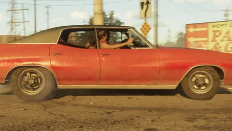
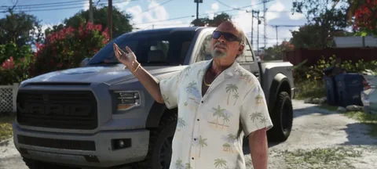
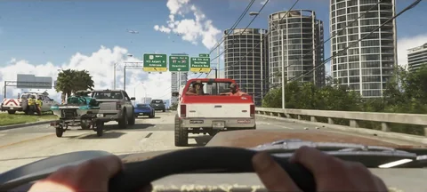
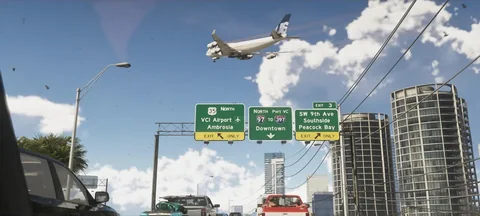
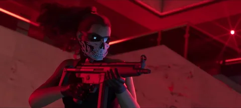
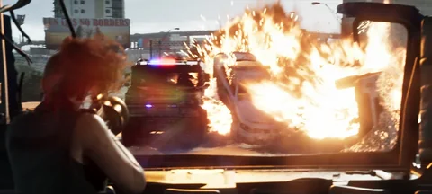
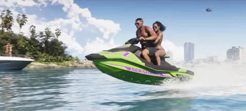
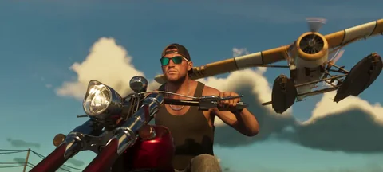

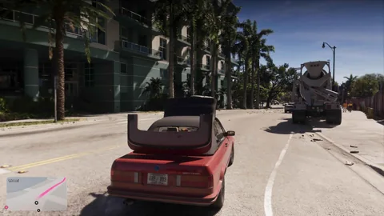
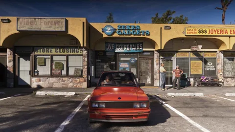
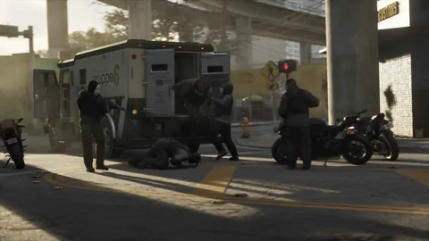


The soundtrack
All the music from the videos
Every song heard, video by video, with its timing.

Trailer 1 1
- Love Is a Long Road Tom PettyThe whole video

Trailer 2 4
- Hot Together The Pointer SistersMain song
- Child Support ZenglenAround 0:27, on the car radio
- Everybody Have Fun Tonight Wang ChungAround 0:34, on the car radio
- Talkin’ to Myself Again Tammy WynetteAround 0:41, on the car radio

Launch trailer 1
- Flower in a Hurricane Justice, Tame Impala, SZA, King Gizzard & The Lizard WizardMain song

An Extended Look 14
- Pop Bottles Birdman, Lil Wayne0:06 to 0:45
- Pound Town Sexyy Red, Tay Keith0:46 to 1:33
- Skrilla Kodak Black1:45 to 2:34
- Let Your Love Flow The Bellamy Brothers6:00 to 6:42
- Love Bites Def Leppard6:43 to 7:25
- People Are People Depeche Mode8:21 to 9:50
- But I Think It’s a Dream Captain & Tennille9:49 to 10:38
- Cars and Girls Prefab Sprout10:39 to 12:24
- Off the Grid !!!, Meah Pace12:25 to 13:10
- Devil Woman Cliff Richard16:49 to 19:36
- Se Me Nota (Agárrame) Chimbala, Omega20:07 to 21:32
- Against All Odds (Take a Look at Me Now) Phil Collins21:33 to 21:56
- Mine O’ Mine Aluna, Jayda G21:55 to 22:53
- Inner Light Elderbrook, Bob Moses25:44 to the end
Questions